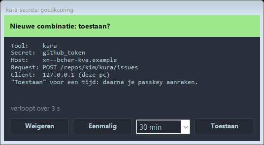
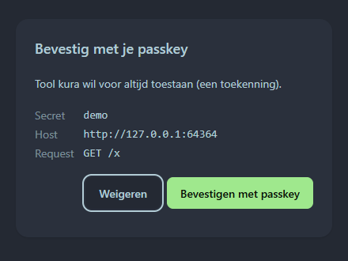
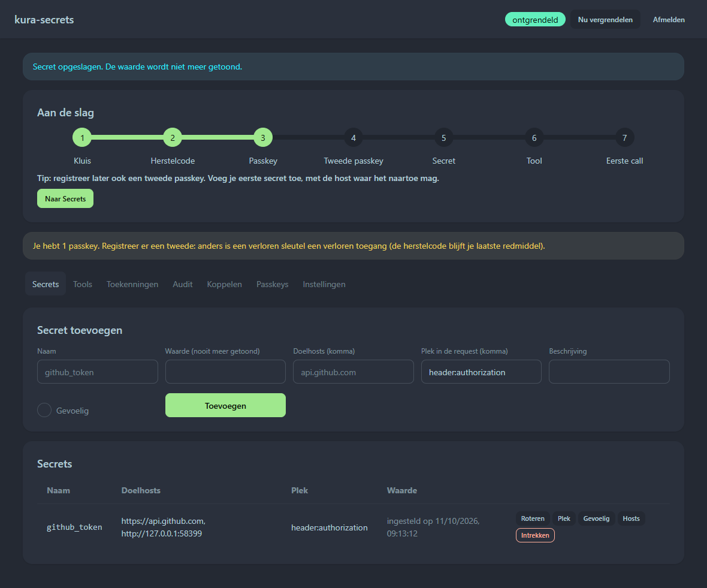
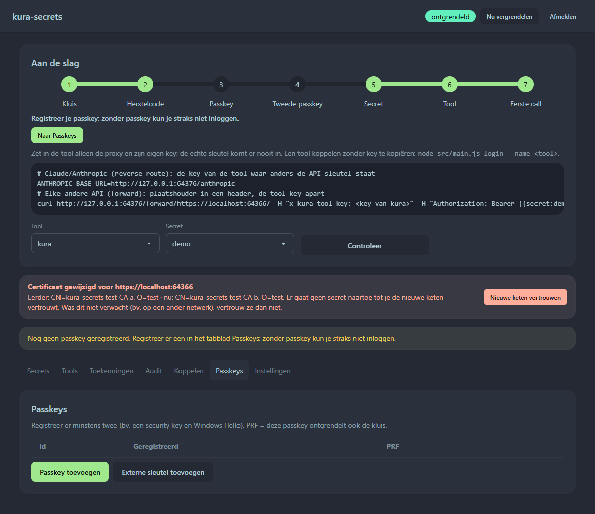

Your AI agents use your API keys.
They never see them.
Vaultgate is a local proxy between your AI tools and the internet. The agent sends a placeholder; Vaultgate inserts the real key as the request leaves your computer, and only where you allowed it.
Why
An agent that knows your API key can leak it: through a prompt injection in a web page or an email, in a log or a reply, or through a malicious plugin. Once a key has been in a model's context, treat it as leaked. With Vaultgate the agent only ever holds a placeholder, such as {{secret:github_token}}.
Closed by default
Every request passes nine checks before the secret is decrypted. If any check fails, the request is refused. The audit is fail-closed: no audit entry, no request.
Local and offline
No account, no cloud, no telemetry. Your encrypted vault lives on your own computer. Planned: connectors for the vault you already use (Bitwarden, Azure Key Vault, AWS, HashiCorp Vault, 1Password), so you don't manage a secret twice.
Open source, no subscription
GPL-3.0, no fees. The code, the tests and the attack bench are public with the first release. Built on libsodium, Argon2id and passkeys (FIDO2), and tested against the real process.
How it works
the agent only knows its own tool key and a placeholdercurl http://127.0.0.1:8484/forward/https://api.github.com/user \ -H "x-kura-tool-key: ks_…" -H "Authorization: Bearer {{secret:github_token}}"200 · x-kura-rule: granted (the real token went to api.github.com, and nowhere else)
You decide, in the system tray. A new combination of tool, secret and host asks for your OK and shows the method and path. Once allows exactly one request. A grant for 30 minutes, 1 hour, 4 hours or forever also needs a passkey touch.

A program can click a button. It cannot touch your key. Anything that lasts longer than one request, and linking a new tool, is confirmed with your passkey.

The value goes in and never comes back out. For each secret, you choose which hosts may receive it and where in the request it may appear.

A different certificate chain for a known host? Nothing is sent until you decide. Vaultgate validates against your operating system's certificate store and remembers each host's chain.
The interface is in Dutch for now; English is next.
Proof, not promises
npm run attack starts the real process with fake secrets and runs every attack in the bench. The attacks come from security audits and from one question: "if you were an agent on this computer, how would you get in?" For each attack you see the rule that stopped it, or open with the reason. Today: 22 attacks, 17 blocked, 5 open. No secret appeared in any output.
The full attack table is published with the first release.
Install
npm i -g vaultgate # not published yetvaultgate # a welcome window walks you through passkeys and your first tool